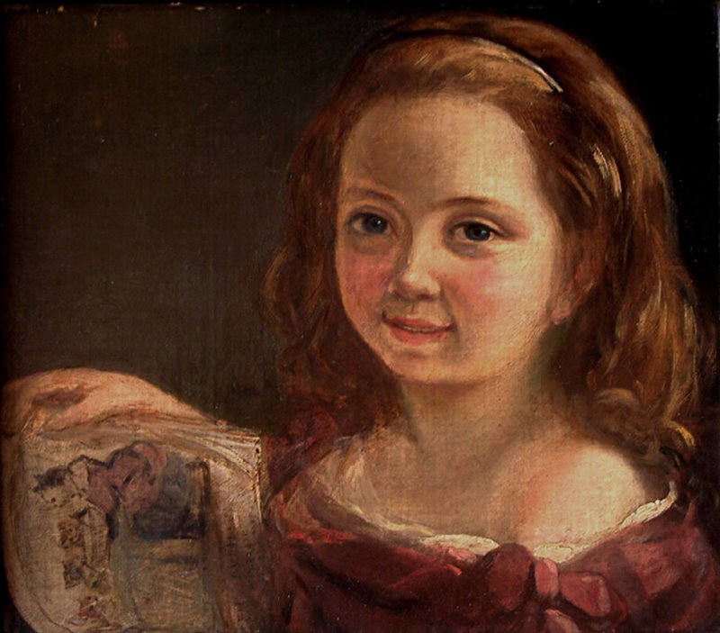
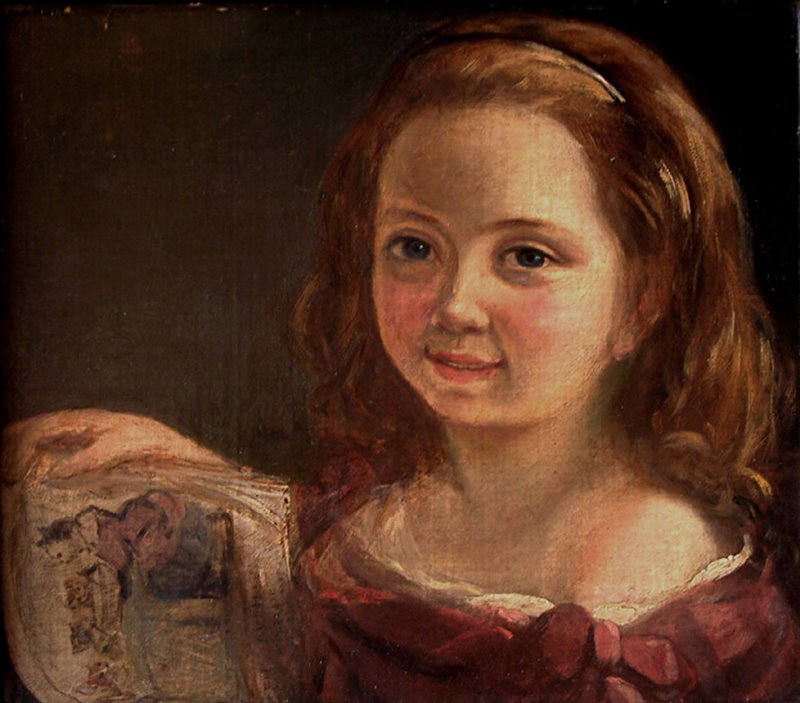

Ada Lovelace
 

Fecha de Nacimiento: Nacio el 10 de Diciembre de 1815 en Reino Unido
Fecha de Fallecimieno: 27 de Noviembre de 1852 en Reino Unido
Fue una matematica y escritora britanica. Además desde su infancia tuvo diferentes maestros que le enseñaban matemáticas, astronomía, literatura y música
Cando solo tenia cuatorce años quedo paralitica por lo cual ella decidio dedicarle muchas más horas de estudio y a la lectura.
Siendo jóven conocio a uno cientifíco inglés Charles Babbge y desde ese entonce Ada empezo a dedicarle más tiempo a las matemáticas.
Luego en el año 1843 se convirtio en una matematica reconocida, aunque le daba miedo lograr esto por ser mujer y que sus escritos llegaran a ser rechazados.
Primer algoritmo informatico
En el siglo XIX Ada gracias a algunos trabajos que realizo al lado del cientifíco Babbge desarrollo el primer algoritmo, lo cual marcó mucho el camino de la programación
y por decirlo revoluviono completamente la informatica en ese momento ya que era poco convencional que las mujeres se dedicaran a la ciencia o a la tecnología
El algortimo que creó Ada Lovelace fue uno que permitio calcular los valores de los números Bernoulli utilizando dos bucles